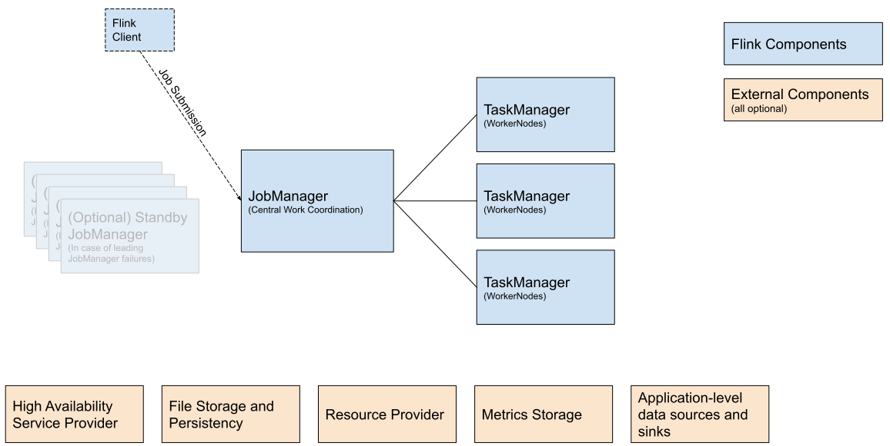

部署
1、概述和参考架构（Overview and Reference Architecture）
下图展示了 Flink 集群的构成部分：
客户端（Flink Client）——比如，命令行接口、REST Endpoint、SQL 客户端等；获取 Flink 应用的代码，转换为 JobGraph（dataflow graph） 并提交给 JobManager。
JobManager——Flink 的中央工作协调组件（central work coordination component）。对于不同的资源支持（YARN、Standalone、Kubernetes）有不同的实现，不同实现在高可用、资源分配、job 提交模式（Application Mode、Per-Job Mode、Session Mode）方面有所不同。负责往 TaskManagers 上分配任务。
job 提交的 JobManager 模式：
- Applicaiton Mode：为一个应用单独地运行集群。job 的 main 方法运行在 JobManager 中。支持在一个应用中调用多次
execute或executeAsync。 - Per-Job Mode：为一个 Job 单独地运行集群。job 的main 方法（或客户端）在集群创建之前执行。
- Session Mode：
- Applicaiton Mode：为一个应用单独地运行集群。job 的 main 方法运行在 JobManager 中。支持在一个应用中调用多次
TaskManager——算子（比如：源、转换、汇）实际上运行的地方。
部署 Flink 时，每个部分通常都有多种部署选项。

Flink 外部组件（可选的）：
- 高可用服务提供者（High Availability Service Provider）：比如，Zookeeper、Kubernetes HA。Flink 的 JobManager 可以在高可用模式下运行，使得 Flink 可以从 JobManager 错误中恢复。为了实现更快的错误恢复，可以启动多个待用（standby）JobManger 作为备用。
- 文件存储和持久性（File Storage and Persistency）：对于 checkpointing （流 job 的恢复机制），Flink 依赖于外部存储系统。
- 资源提供者（Resource Provider）：Flink 可以通过不同的资源提供者框架（比如 Kubernets 或 YARN）进行部署。
- 指标存储（Metrics Storage）：Flink 组件报告内部指标，Flink jobs 也可以报告额外的、job 专用的指标。
- 应用层数据源和汇（Application-level data sources and sinks）：当应用层数据源和汇在技术上不是 Flink 集群组件部署的一部分时，如果计划进行新的 Flink 生产部署应该考虑它们。用 Flink 托管频繁使用的数据可以显著提升性能。比如，Kafka、ElasticSearch、Cassandra。
2、部署模式
Flink 执行应用的三种模式：
- Application Mode
- Per-Job Mode
- Session Mode
它们的不同在于：
- 集群生命周期和资源独立保证。
- 应用的
main()方法执行于客户端还是集群之上。

2.1、Application Mode
在所有其它模式中，应用的 main() 方法都是在客户端侧执行的。main() 方法的执行 包括下载应用的依赖到本地，执行 main() 方法以提取一个 Flink 的运行时可以理解的应用的表示（即 JobGraph）并将这些依赖和 JobGraph(s) 发送给集群。这使得客户端成为一个很重的（heavy）消费者，因为它需要大量的网络带宽来下载依赖并发送二进制数据（binaries）到集群，还需要消耗 CPU 周期来执行 main() 方法。当客户端是多用户共用的时候，这个问题会更加明显。
基于这个问题，Application Mode 在每次提交应用时都创建一个集群，但是，此时，main() 方法则是由 JobManager 执行的。每个应用创建一个集群可以被看作是，创建一个被某个特定应用的 jobs 之间共享的会话集群（session cluster），当应用结束时，这个集群关闭。使用这种架构，Application Mode 提供了与 Per-Job 模式相同的资源独立和负载均衡保证，但是是整个应用粒度的。
Application Mode 是基于用户 jars 已经存在于所有需要访问它的 Flink 组件（JobManager、TaskManager）的 classpath（usrlib 目录）中 。换句话说，应用与 Flink 分布绑定在一起。这使得 Application Mode 能加速部署和恢复处理，而不必像其它部署模式那样通过 RPC 将用户 jars 分发到 Flink 组件。
Application Mode 假设用户 jars 与 Flink 分布绑定在一起。
在集群中执行
main()方法可能对用户代码有其它的影响，比如在环境中使用registerCachedFile()注册的任何路径对于应用的 JobManager 必须是能够访问的。
与 Per-Job 模式相比，Application Mode 允许提交由多个 jobs 构成的应用。job 执行的顺序不受部署模式的影响，而是受启动 job 的调用的影响。使用阻塞式的（blocking） execute() 方法时，能够确立一个顺序——使得“当前” job 完成之前“下一个” job 被推迟。使用非阻塞式的 executeAsync() 方法时，“下一个” job 会在“当前” job 结束之前启动。
Application Mode 允许的多
execute()应用是不受高可用支持的。Application Mode 中的高可用仅支持单execute()应用。此外，Application Mode 下，当多个运行 jobs（比如，用
executeAsync()提交）中的任何一个被取消时，所有的 jobs 都会停止，JobManager 会关闭。支持常规的 job 完成（通过数据源关闭）。
2.2、Per-Job Mode
Per-job 模式只被 YARN 支持，在Flink 1.15 中已经废弃。未来版本中将会被删除。所以，推荐在 YARN 中使用 Application Mode 启动每一个 job 专用的集群
为了提供更好的资源独立性保证，Per-Job 模式使用可用的资源提供框架（比如，YARN）为每一个提交的 Job 启动一个集群。这个启动的集群仅对于那个 job 可用。job 结束，集群关闭、资源释放。这提供了更好的资源独立性，因为异常的 job 只能导致自己的 TaskManager 失败。此外，它在多个 JobManagers 之间分散了簿记负载（laod of book-keeping），因为每个 job 都有一个 JobManager。因此，基于很多生产原因 Per-Job 资源分配模型是首选的。
2.3、Session Mode
Session Mode 假设有一个运行中的集群，并使用这个集群的资源来执行任何提交的应用。运行在相同（会话）集群中的应用使用并竞争相同的资源。这种模式的优势是，没有每次提交 job 时启动一个集群的资源开销。但是，如果一个 job 异常或者导致一个 TaskManager 故障，那么运行在那个 TaskManager 上的所有 jobs 都会受到影响。除了对导致失败的 job 的消极影响，还会引起潜在的大量的恢复进程——所有重启的 jobs 并发地访问文件系统，使得不能进行其它服务。此外，让一个集群运行多个 jobs 意味着 JobManager 更大的负载，JobManager 负责集群中所有 jobs 的簿记。
2.4、总结
在 Session Mode 下，集群生命周期对于集群中任何运行的 Job 是独立的，资源是由所有 jobs 共享的。 Per-Job 模式每次提交 job 都有启动一个集群的开销，但是具有更好的资源独立性，集群的生命周期与 job 绑定。Application Mode 为每个应用创建一个会话集群，在集群中执行应用的 main() 方法。